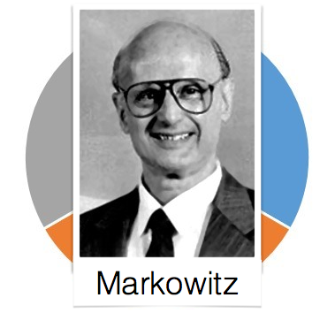
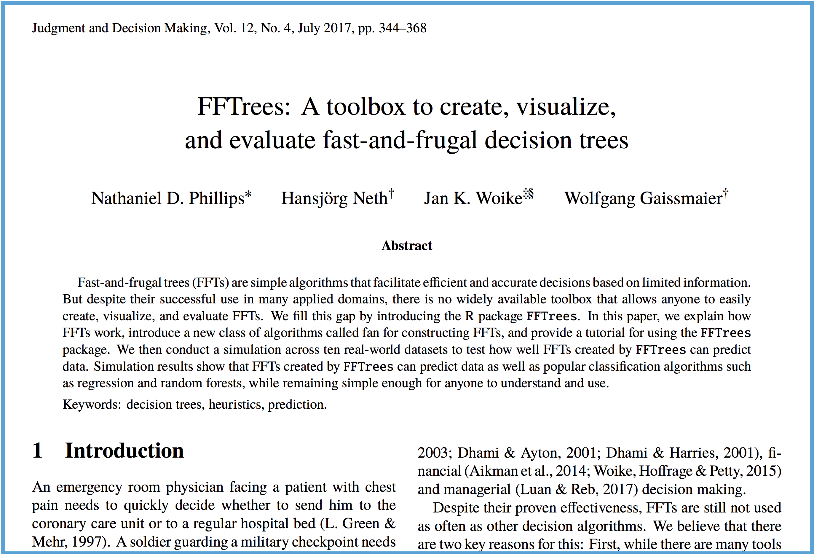

- Task: Create an interactive tool for exploring and visualising PRO (Patient Reported Outcome) data.
- Status: Most underlying code for visualizations is complete. To be integrated into Adrian Waddel's Teal framework
Dr. Nathaniel Phillips
Roche EU Learning Series
How can people make good decisions based on limited, noisy information?


"As the city’s principal public hospital, Cook County was the place of last resort for the hundreds of thousands of Chicagoans without health insurance. Resources were stretched to the limit. The hospital’s cavernous wards were built for another century. There were no private rooms, and patients were separated by flimsy plywood dividers. [...] Doctors once trained a homeless man to do routine lab tests because there was no one else available." Malcolm Gladwell, Blink.


Green & Mehr (1997) "What alters physicians' decisions to admit to the coronary care unit?"


Algorithms are opinions embedded in code. [Most people think] algorithms are objective and true and scientific. That's a marketing trick. It's also a marketing trick to intimidate you with algorithms, to make you trust and fear algorithms because you trust and fear mathematics. A lot can go wrong when we put blind faith in big data.
When [algorithms] are secret, important and destructive, I've coined a term for these algorithms: Weapons of math desctruction
Getting a car to drive [autonomously] was an impressive feat. But it’s also a bit unsettling, since it isn’t completely clear how the car makes its decisions. [..] [W]hat if one day it did something unexpected—crashed into a tree, or sat at a green light? [...] The system is so complicated that even the engineers who designed it may struggle to isolate the reason for any single action.
~ Will Knight, MIT Technology Review, April 2017
Whether it’s an investment decision, a medical decision, or maybe a military decision, you don’t want to just rely on a ‘black box’ method.” ~ Tommi Jaakkola, MIT professor of machine learning

Rather than using black box algorithms we can use simple heuristics

"The mind can use less information and computation or take less time and nevertheless achieve better performance." ~ Gigerenzer & Brighton, 2009

"A baseball outfielder behaves as if he had solved a set of differential equations in predicting the trajectory of the ball [...] something functionally equivalent to the mathematical calculations is going on" (Dawkins, 1989)
Gaze Heuristic (Gigerenzer, 2007)

Nobel prize winning Harry Markowitz model:
Selects the most efficient portfolio by analyzing various possible portfolios of different securities

1 / N Heuristic:
Equally distribute funds across all N assets

Nobel prize winning Harry Markowitz model:
Selects the most efficient portfolio by analyzing various possible portfolios of different securities
1 / N Heuristic:
Equally distribute funds across N assets

Discover and tell meaningful stories from your data.
Focus on what is important, ignore what is not.
Give a realistic assessment of uncertainty and risk.
Simplicity is the ultimate sophistication ~ Leonardo da Vinci
The art of being wise is the art of knowing what to overlook ~ William James
A toolbox to create fast-and-frugal decision trees (FFTs) for binary classification decisions.
Any kind of data.
Minimal to no programming, extensive examples and guides.



| age | sex | cp | trestbps | chol | fbs | restecg | thalach | exang | oldpeak | slope | ca | thal | diagnosis |
|---|---|---|---|---|---|---|---|---|---|---|---|---|---|
| 63 | 1 | ta | 145 | 233 | 1 | hypertrophy | 150 | 0 | 2.3 | down | 0 | fd | 0 |
| 67 | 1 | a | 160 | 286 | 0 | hypertrophy | 108 | 1 | 1.5 | flat | 3 | normal | 1 |
| 67 | 1 | a | 120 | 229 | 0 | hypertrophy | 129 | 1 | 2.6 | flat | 2 | rd | 1 |
| 37 | 1 | np | 130 | 250 | 0 | normal | 187 | 0 | 3.5 | down | 0 | normal | 0 |
| 41 | 0 | aa | 130 | 204 | 0 | hypertrophy | 172 | 0 | 1.4 | up | 0 | normal | 0 |
| 56 | 1 | aa | 120 | 236 | 0 | normal | 178 | 0 | 0.8 | up | 0 | normal | 0 |
# Step 1: Install and load FFTrees (v.1.3.2)
install.packages("FFTrees")
library("FFTrees")
# Step 2: Create FFTs
heart.fft <- FFTrees(formula = diagnosis ~., # Formula
data = heart.train, # Training data
data.test = heart.test, # Test data
main = "Heart Disease", # Optional labels
decision.labels = c("Low-Risk", "High-Risk"))
plot(heart.fft, data = "test") # Training data

Problem: How to diagnose children as having one of two muscle disorders?
Data: 147 children with ~ 10 different medical measurements.
Collaboration between Dr. Patricia Haefner (University of Basel) and Matthew Pitt (NHS, UK)
my.tree =
'If age > 50, predict FALSE.
If sex = {m}, predict TRUE.
If ca > 1, predict TRUE, otherwise, FALSE')

How well can simple FFTs compete with classical rational models and cutting-edge machine learning algorithms?
mean(sensitivity, specificity)


I have personally been amazed by how well fast-and-frugal trees can predict data.
Try FFTrees, you might be surprised by how well it works, and generate meaningful insights.
When using an algorithm, ask yourself two questions:

Email: Nathaniel.D.Phillips.is@gmail.com
Website: http://ndphillips.github.io
FFTrees R package:
install.packages("FFTrees")ShinyFFTrees: https://econpsychbasel.shinyapps.io/ShinyFFTrees